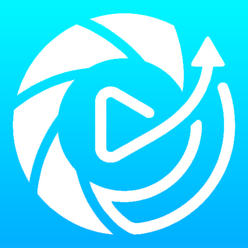

A macOS menu-bar capture tool for GIFs, screenshots, and full-page web shots — with a built-in telestrator pen so the visual is ready to ship the moment you stop recording.
Mount the DMG, drag SnapCast into Applications. First launch may need right-click → Open — the build isn't notarized yet.
What it does
SnapCast lives in your menu bar and stays out of the way until you need it. Open the popover, pick a mode, hit a hotkey — the file is on your Desktop a moment later, and a preview toast slides into the corner so you can confirm without alt-tabbing.
Frame-accurate screen recording exported as a smooth animated GIF, ready to paste into Slack, Notion, or a PR description.
Pixel-precise stills using the same selection tools as recordings — plus a few tricks the system tool can't do.
Capture several regions across the screen, reorder them, and stitch the lot into one composite image.
Toggle Annotate in the popover and the next capture opens a drawing canvas right over the area you've selected. Pick a color, pick a thickness, and circle the interesting bit. Strokes are baked in at capture time — no second tool, no second file.
It works for stills and for GIF recordings: in recording mode the canvas stays live the whole take, so you can mark up timing, point at the bug, or score the play in real time. The pen has a soft electric bloom under every stroke so the line reads crisp on any background.
Paste a URL into the Screenshot tab. SnapCast loads it in a hidden web view, scrolls through the whole document so lazy-loaded imagery has time to render, then stitches the result into a single tall PNG or JPEG.
Configurable viewport width (800–2560 px) and load wait (1–10 seconds) let you tune the render for responsive layouts or slow CMSes.
Start a Merger session, grab as many regions as you need, then reorder and combine them into one polished image. Useful for long scrolling captures, before-and-after layouts, or multi-component product shots that don't naturally fit in one screen.
Vertical or horizontal stitching, with automatic centering for mismatched dimensions, and the same PNG / JPEG output as the screenshot tool.
Capture so well that editing is optional.
SnapCast design principle
Trigger a window capture and a picker opens with live thumbnails of every on-screen window, grouped by application, with a live-filter search field and full arrow-key navigation.
System chrome, the Dock, the wallpaper, and SnapCast's own windows are filtered out automatically so the grid only contains things you'd plausibly want to capture.
Frame rate (1–60), duration cap (1–120 s), pre-roll delay (0–10 s), GIF color count (8–256), dither toggle, loop count, viewport width, page wait time. Every setting is one click away in the popover and persists between launches.
Optional resize-on-export with aspect-ratio lock, a custom output folder, and an auto-copy-to-clipboard switch so paste works in Finder, Mail, Slack, and your image editor.
Details
Small decisions that add up: no dock clutter, no permission surprises, no clipboard dance, no waiting around to confirm a capture worked.
LSUIElement app — no dock icon, no app switcher entry. Click the bar icon, do the thing, get back to work.
Every capture, the merger session, stop, and the annotation paint toggle can be bound to any chord. Reset to defaults in one click.
Permission state is surfaced in the popover with explicit Grant buttons — and a Relaunch button for the moments macOS needs a process restart after granting Accessibility.
Pick the window you want by seeing it, grouped by app, with search and arrow-key navigation — not by reading a list of titles.
After every capture, a thumbnail slides into the bottom-right corner. Click to open the file; ignore it and it fades on its own in five seconds.
Optional auto-copy writes both the file URL and the bitmap, so paste works in Finder, Mail, Slack, and in image editors.
0–10 second countdown before recording starts so you can dismiss the popover, surface your demo, and only catch the part you actually want on tape.
Captures land on the Desktop by default, but a folder picker in Settings sends them anywhere — iCloud Drive, a project directory, a watched dropbox.
Mid-selection, mid-annotation, mid-window-picker — Escape backs out cleanly to where you were before, no orphaned overlays.
Default keys
Defaults are clustered on ⌘⇧6–⌘⇧0 so you can sweep across the number row. Anything without a default is one click away in Settings.